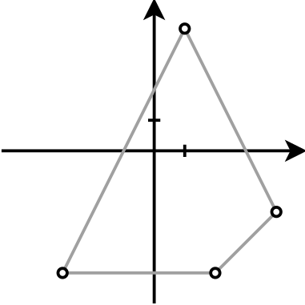

Gyakorlat, 5. hét: származtatott típusok
Czirkos Zoltán · 2019.10.15.
Származtatott típusok: tömbök és struktúrák. Összetett adatszerkezetek definíciója és kezelése.
Felkészülés a gyakorlatra:
- A függvényekről, funkcionális dekompozícióról szóló előadásrészlet anyagának megértése.
- A struktúrákról szóló előadásrész anyagának megértése.
Ikerprímeknek nevezzük azokat a prímszám együtteseket, amelyeknél n és n+2 is prím. Az első 3 ilyen pár (3, 5), (5, 7) és (11, 13). Melyik a 60-adik? Határozd meg C programban! A két prím közötti egész számnak van 5-ös számjegye? Határozd meg ezt is!
Használj top-down tervezést, ne duplikáld a prímkereső algoritmust!
Megoldás
A megoldás alapötlete
A „következő ikerprímet” ez az algoritmus találja meg:
while (!(prim(szam) && prim(szam + 2)))
szam += 2;Az 5-ös számjegy kereséséhez pedig a legutóbbi, számrendszeres feladatot
vehetjük kiindulási alapnak. A szam % 10 kifejezés értéke a legalsó
számjegy.
#include <stdio.h>
#include <stdbool.h>
/* eldöntés algoritmusa: van-e osztója */
bool prim(int szam) {
for (int oszto = 2; oszto < szam; ++oszto)
if (szam % oszto == 0)
return false;
return true;
}
/* ez is eldöntés algoritmusa: van-e benne valamilyen számjegy. */
bool vanbenne(int szam, int szamjegy) {
bool talalt = false;
while (szam > 0 && !talalt) {
if (szam % 10 == szamjegy)
talalt = true;
szam /= 10;
}
return talalt;
}
int main(void) {
/* ez a nulladik (ami nincs). az elso, amit megtalalunk, a 3;5 lesz. */
int szam = 1;
int count = 0;
while (count < 60) {
szam += 2;
if (prim(szam) && prim(szam + 2))
count += 1;
}
printf("%d. ikerprim: %d %d\n", 60, szam, szam+2);
/* a második rész: a közöttük lévő számban van-e 5-ös */
printf("%s benne 5-os.\n", vanbenne(szam + 1, 5) ? "Van":"Nincs");
return 0;
}Az ikerprímek vizsgálatát lehetne még gyorsítani. A vizsgált számpárok:
(5;7), (7;9), (9;11) stb., azaz minden számpár második tagja a következő
számpár első tagja. A vizsgálat eredményét el lehetne tárolni egy
bool típusú változóban, és a következő iterációban felhasználni.
Hasonló feladatok
Ha ennek a feladatnak a megoldását a gyakorlaton nehezen értetted meg, vagy nem tudnád önállóan megoldani, a példatárban itt találsz hasonlókat, amiken gyakorolhatsz otthon.
Írjunk programot, amely egy struktúrában időpontot tárol: óra, perc. Írjunk függvényeket ehhez:
ido_kiir(i): kiírja az időpontot óra:perc formában.ido_hozzaad(i, p): hozzáadppercet aziidőponthoz, és visszatér az új időponttal. Pl. 15:15 + 45 = 16:00.ido_eltelt(i1, i2): megmondja, hány perc telt el a két időpont között, pl. 16:30-15:15 = 75 perc. (A paraméterek sorrendje a kivonásnál megszokott: kisebbítendő, kivonandó.)ido_kivon(i, p): kivonppercet aziidőpontból, és visszatér az új időponttal. Pl. 15:45 - 30 = 15:15.
Megoldás
A 60 perc és a 24 óra kezelésére a percek hozzáadásánál nagyon jól
használható a maradékképzés. Pl. 16:55+10 esetén: :55+10 = :65,
ami helyett a következő óra :05 kellene. 65%60, vagyis
a 60-nal osztás maradéka pont a percet adja, 65/60, maga az osztás pedig 1-et,
amennyivel az órát meg kell növelni. Az órát utána egyszerűen 24-gyel modulózzuk,
mert a napokkal már nem kell foglalkozni.
A kivonás nem megy ilyen egyszerűen, mert (5-10)%60 = (-5)%60 = -5.
Ott sajnos külön kell kezelni a keletkező negatív értékeket. De ott is ki lehetne
olyan megoldást találni, amely ciklusok nélkül, csak maradékos osztásokkal dolgozik.
#include <stdio.h>
/* Időpontot tárol egy napon belül: óra és perc. */
typedef struct Ido {
int ora, perc;
} Ido;
/* Kiírja a paraméterként kapott időpontot óra:perc formában. */
void ido_kiir(Ido i) {
printf("%02d:%02d", i.ora, i.perc);
}
/* Hozzáad a megadott i időponthoz p percet, és visszatér
* az így kapott időponttal. p-nek pozitívnak kell lennie. */
Ido ido_hozzaad(Ido i, int p) {
int ejfeltol = i.ora * 60 + i.perc + p;
Ido uj;
uj.perc = ejfeltol % 60;
uj.ora = ejfeltol / 60 % 24;
return uj;
}
/* Kiszámolja, hány perc telt el i1-től i2-ig. A paraméterek
* sorrendje a kivonásnál megszokott: i2-i1, rendre a
* kisebbítendő és a kivonandó. Azzal a feltételezéssel ad
* helyes eredményt, hogy a két időpont egy napon van. */
int ido_eltelt(Ido i2, Ido i1) {
return i2.ora*60-i1.ora*60 + i2.perc-i1.perc;
}
/* Kivon valahány percet a megadott időpontból, és az így keletkező
* új időponttal tér vissza. Negatív p-re helytelenül működik. */
Ido ido_kivon(Ido i, int p) {
Ido uj;
uj.perc = i.perc-p;
uj.ora = i.ora;
while (uj.perc < 0) {
uj.perc += 60;
uj.ora -= 1;
}
while (uj.ora < 0)
uj.ora += 24;
return uj;
}
int main(void) {
Ido i1 = { 11, 50 }, i2 = { 12, 10 }, i3 = { 3, 30 };
printf("i1 = "); ido_kiir(i1); printf("\n");
printf("i2 = "); ido_kiir(i2); printf("\n");
printf("i3 = "); ido_kiir(i3); printf("\n");
printf("i2-i1 = %d\n", ido_eltelt(i2, i1));
printf("i1+195 = "); ido_kiir(ido_hozzaad(i1, 195)); printf("\n");
printf("i2-195 = "); ido_kiir(ido_kivon(i2, 195)); printf("\n");
printf("i3-240 = "); ido_kiir(ido_kivon(i3, 240)); printf("\n");
return 0;
}Hasonló feladatok
Ha ennek, vagy a következő néhány feladatnak a megoldását a gyakorlaton nehezen értetted meg, vagy nem tudnád önállóan megoldani, a példatárban itt találsz hasonlókat, amiken gyakorolhatsz otthon.
Elevenítsük fel a római számok kiírása programot! Ott a számok értéke szerint csökkenő sorrendben haladtunk. Valahogy így:
…
if (szam >= 5) { printf("V"); szam -= 5; }
if (szam >= 4) { printf("IV"); szam -= 4; }
while (szam >= 1) { printf("I"); szam -= 1; }
…Figyelmesen vizsgálva a problémát rájöhettünk arra, hogy bármelyik feltétel kicserélhető
ciklusra ebben a feladatban. Azért írtunk feltételt a szam>=5 kifejezéshez, mert
tudjuk, hogy legfeljebb csak egyszer fog teljesülni – de akár írhattunk volna ciklust is.
Ha mindegyik helyre ciklus kerül, akkor így néz ki a kód:
…
while (szam >= 5) { printf("V"); szam -= 5; }
while (szam >= 4) { printf("IV"); szam -= 4; }
while (szam >= 1) { printf("I"); szam -= 1; }
…Ez a sorminta már csak arra vár, hogy ciklust csináljunk belőle. Írjuk át a programot!
Megoldás
Minden római számhoz (pl. V, egy sztring C-ben) egy érték tartozik (pl. 5, egy egész szám C-ben), ez struktúrába való. A sok római szám struktúrái pedig tömbbe. Használhatjuk azt a trükköt, hogy egy oda nem illő értékkel megjelöljük a tömb végét. Mivel a rómaiak nem használtak 0-t, a tömb végét jelölheti egy olyan elem, ahol az érték 0.
Az adatszerkezetet a jobb oldalon látható ábra mutatja. A struktúrát a kék elem mutatja. Ilyenekből épül fel a teljes tömb, amelynek indexei pedig az elemek mellett láthatóak.
A teljes adatszerkezet tehát olyan tömb, amely struktúrákat tartalmaz. A tömböt előbb indexelni lehet,
hogy egy struktúrához jussunk, utána pedig annak egy adattagját választhatjuk ki, hogy egy konkrét értékhez.
Például a szamjegyek[1].ertek az 50-hez vezet, szamjegyek[0].romai pedig az XC sztringhez. (A sztring maga is tömb, de ezt most nem boncolgatjuk.)
#include <stdio.h >
int main(void) {
typedef struct Romai {
char romai[5];
int ertek;
} Romai;
Romai szamjegyek[] = {
{ "XC", 90 },
{ "L", 50 },
{ "XL", 40 },
{ "X", 10 },
{ "IX", 9 },
{ "V", 5 },
{ "IV", 4 },
{ "I", 1 },
{ "", 0 } /* tömb végét jelző */
};
int szam;
printf("Mi a szám? ");
scanf("%d", &szam);
if (szam < 1 || szam > 99)
printf("Ez nekem már sok. Csak 99-ig tudom.\n");
else {
int i = 0;
while (szamjegyek[i].ertek > 0) {
while (szam >= szamjegyek[i].ertek) {
printf("%s", szamjegyek[i].romai);
szam -= szamjegyek[i].ertek;
}
++i; /* következő római szám */
}
printf("\n");
}
return 0;
}A programba épített táblázat egy inicializált tömb a megfelelő római jelekkel és a hozzájuk tartozó értékkel. Ezt a függvényen belül is létrehozhatjuk, mivel máshol nem használjuk. A struktúra definícióját egybe is építhetjük a tömb változó létrehozásával. Ilyenkor még az is lehetséges, hogy a struktúra névtelen, mivel sehol máshol nem kell hivatkozni név szerint a típusra:
struct {
char romai[5];
int ertek;
} szamjegyek[] = {
{ "XC", 90 },
{ "L", 50 },
{ "XL", 40 },
{ "X", 10 },
{ "IX", 9 },
{ "V", 5 },
{ "IV", 4 },
{ "I", 1 },
{ "", 0 } /* tömb végét jelző */
};Adjunk meg egy Pont típust, amely kétdimenziós koordinátát (x, y) tárol! Írjunk ehhez függvényeket:
tav(): a paraméterként kapott két pont távolságával tér vissza! (Ehhez Pitagorasz tételét kell használni.)egyenlo(): megvizsgál két pontot, és megmondja, hogy egybeesnek-e!beolvas(): beolvassa egy pont koordinátáit a billentyűzetről, és visszatér vele!
Ha ezek megvannak, az eddigiek használatával oldjuk meg az alábbi feladatot:
Egy gazda szeretné körbekeríteni a telkét drótkerítéssel. Írj programot, amely kiszámítja, hogy mennyi kerítésre lesz szüksége! A program kérje egymás után a kerítésoszlopok koordinátáit (x, y koordinátapárok), számítsa ki az aktuális és az előző oszlop távolságát, és összegezze a távolságokat! Az összegzést addig folytassa, amíg a megadott koordináták nem egyeznek az elsőként megadott koordinátapárral, vagyis míg vissza nem ér a kezdőoszlophoz!
Ehhez célszerű egy változóba följegyezni a kezdőpontot, azután pedig két további, pont típusú változóval dolgozni: az egyik tárolja az új pont adatait, a másik pedig mindig az eggyel előzőt.
Megoldás
A megoldáshoz nem kell tömböt használni: mindig csak az előző koordinátára kell emlékezni, és azzal az új kerítésszakasz hossza kiszámítható. Hasonlóképp, az első oszlop koordinátáit eltárolva észre tudja venni a program, amikor a legutóbbi beírt pont egybeesik az elsővel.
#include <stdio.h>
#include <math.h>
#include <stdbool.h>
typedef struct Pont {
int x, y;
} Pont;
double tav(Pont p1, Pont p2) {
return sqrt(pow(p1.x-p2.x, 2) + pow(p1.y-p2.y, 2));
}
bool egyenlo(Pont p1, Pont p2) {
return p1.x == p2.x && p1.y == p2.y;
}
Pont beolvas(void) {
Pont p;
scanf("%d %d", &p.x, &p.y);
return p;
}
int main(void) {
/* A kezdőpont, ehhez kell majd visszatérni */
printf("Kezdőpont:\n");
Pont kezdo;
kezdo = beolvas();
/* Összegzés */
double hossz = 0;
printf("További pontok:\n");
Pont egyik; /* mindig ez lesz az előző pont */
Pont masik; /* meg amit most beolvastunk */
egyik = kezdo;
do {
masik = beolvas();
hossz += tav(egyik, masik);
egyik = masik; /* a következő iteráció számára */
} while (!egyenlo(masik, kezdo));
/* Összeg kiírása */
printf("A hossz: %f\n", hossz);
return 0;
}